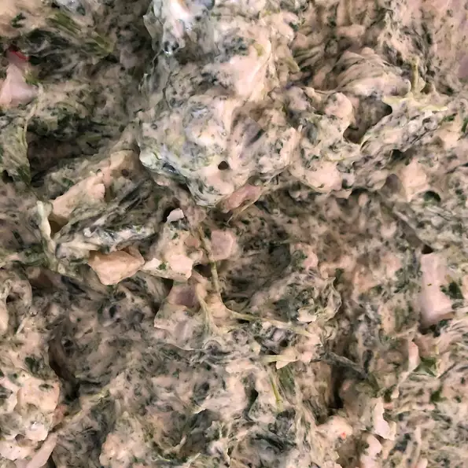

Spinach Dip recipe

Description
A flavorful spinach mixture fills a tasty bread bowl.
Ingredients
- 1 container sour cream
- 1 cup mayonnaise
- 1/2 package frozen chopped spinach, thawed and drained
- 1 can water chestnuts, drained and chopped
- 1 package dry leek soup mix
- 1 loaf round sourdough bread
Steps
Step 1
- Mix sour cream, mayonnaise, spinach, water chestnuts, and dry leek soup together in a medium bowl.
- Chill in the refrigerator 6 hours, or overnight.
Step 2
- Slice off the top of the sourdough round and pull out the soft interior, leaving a sturdy bread bowl.
- Fill with spinach mixture.
- Tear removed bread chunks into pieces for dipping.